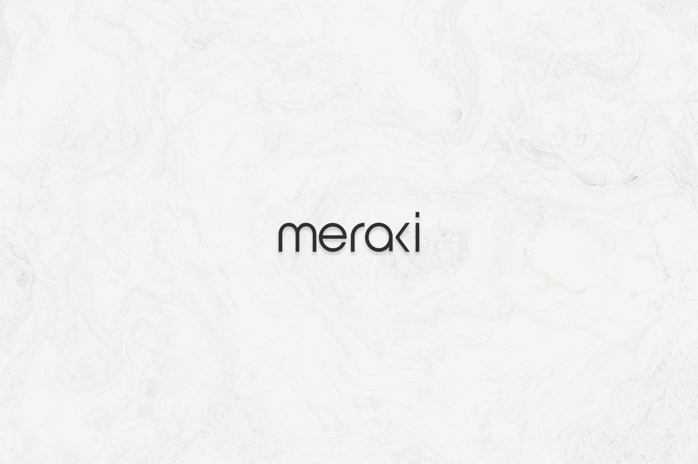
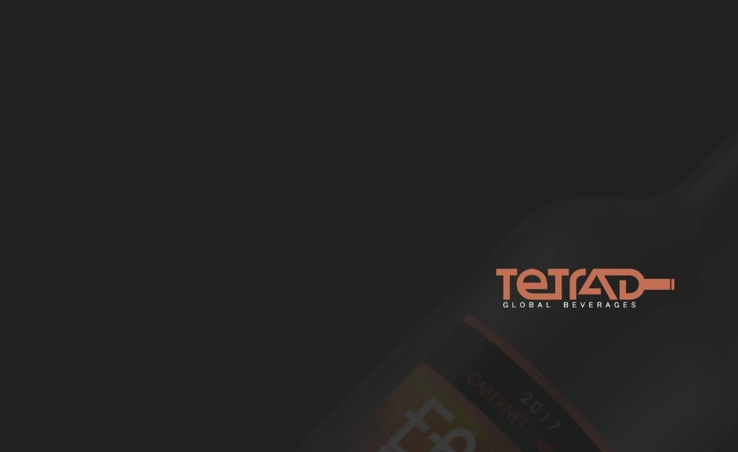
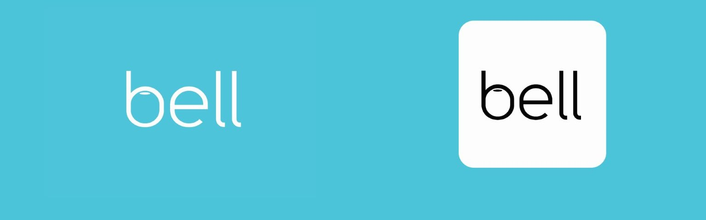

Projects
Every piece shown as the artwork itself. Filter by discipline to see the range within each.
Selected projects
Thirteen bodies of work, each spanning several disciplines.

Workfabric AI
Web Design · UI Design · Information Design · B2B
The marketing site for ContextFabric, a context layer that sits underneath an enterprise’s AI agents. The hard part was never the layout — it was finding something to show, for a product whose whole value is that you never see it.
View Project
KNKU
Product Design · Front-end · UX Research · Fintech
A shared household expense ledger that parses bank SMS as it arrives, so the dashboard is simply always current. Four interface problems that were quietly handing the checking back to the people using it — and what it took to fix each one.
View ProjectForum by Rego
Marketing Strategy · Motion Graphics · Branding · Social Media Strategy
Forum by Rego is a platform that brings multi-disciplinary creatives into a single space, allowing individuals to showcase their work and create an opportunity to interact with the community.
View Project
Logofolio
Digital Design · Branding · Graphic Design
The Logofolio showcases a series of logo designs for digital assets as well as product based assets.
View Project
Meraki
Branding · Graphic Design · Packaging Design · Logo Design
The rebranding of Meraki was carried forward based on new user data and the audiences the brand intended to reach, using design research methods such as brainstorming and mindmapping to arrive at the desired brand design.
View Project
Trippy Goat & The Mixer
Packaging Design · Brand Strategy · Digital Design · Cinematography
Building a brand identity, developing a brand strategy and growing a loyal customer base for Trippy Goat, in the heart of Bangalore, attracting customers drawn to fusion cuisine paired with wine blends from around the world.
View Project
Socials
Social Media Design · Motion Graphics · Brand Design
A dating night from Trippy Goat, run by the team behind the Mixer and intended as a quarterly fixture — a reason for people to meet each other, and for a venue to fill its room, in the middle of Covid. The kit needed a colour theme distinct from the existing Mixer identity.
View Project
PES University
Design Strategy · Digital Design · Social Media Strategy · UI Design
Marketing a new Sports Management course through the mediums best suited to reaching prospective students and encouraging enrolment or enquiries to the admissions department.
View Project
Tetrad Beverages
UI Design · Social Media Strategy · Graphic Design
Amid the pandemic, a social media strategy built on existing collateral alongside a refreshed design campaign for a range of wines, tailored to each season. Tetrad also needed a new website design and layout carrying the new brand image, giving consumers access to the range.
View ProjectJumbotail
Packaging Design · Design Systems · Brand Architecture · Retail
Jumbofarms is a white-label brand sold exclusively on Jumbotail, built to give kirana shopkeepers a better margin than the brands beside it. A year of packaging across it, Vedha and Crispy Corner, plus the shop front and campaigns that carry them.
View Project
Jodhpur Khana
UX Research · UI Design · 3D Design · Experiential Design
A freelance project to bring Jodhpur’s street stalls out into the central market — a modular cart a vendor can set up where the footfall already is, and an app handling discovery, maps and payments.
View Project
Bell Home Security
User Research · Userflow · Mindmapping · UI Design
A freelance project for community-based entry, before MyGate scaled up. Naming, identity and interface built around access a resident can grant and revoke, worked out from function analysis before any mark was drawn.
View Project
LearnARcade
User Research · Design Management · Design Strategy · UI Design
A Design Management final major project: an augmented reality intervention using multi-sensory learning for dyslexic adults, built on a Triple Diamond research framework.
View ProjectShowing projects matching · show all
No projects in this category yet.